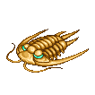

4.0资料片-其他NPC介绍
| 天马： 天马身体雪白，外型与独角兽相似，比较特别的是，天马拥有一双翅膀，可以翱翔于世界各地。天马的行踪相当的神秘，许多人费尽千辛万苦仍无法一睹天马的身影…。 | |
| 半鱼人： 身体一半是鱼，一半是人的半鱼人，与美人鱼不同于，半人鱼手跟脚都有蹼，且可行走于陆地。相传半鱼人是来自宇宙的外星人，在一次拜访地球时，意外发生事故，就长期生活在地底世界里，并建立了一个地底王国，着重于科学研究，期待早日能重返宇宙的家乡。 | |
| 沙虫： 原本居住于海滩沙地中的一种温和软件动物，似乎是受到了海水污染的影响，沙虫突然变成巨大而狂暴的凶猛动物，经常躲在沙底下虎视眈眈的等着无知的人类或动物经过。 | |
| 恐鸟： 古代纽西兰特有的生物，体型相当高大。快速飞奔的能力是��最佳攻击武器，剧烈的撞击力道可轻易的撞开任何障碍物，虽然拥有巨大的身躯，可是胆子却相当的小，只要稍为受到一点惊吓，就会死命的四处乱窜，相当危险。 | |
| 伞蜥蜴： 生长于澳洲的特殊爬虫类动物，平常出没于森林或雨林之中，个性看似温和，却具有凶残的杀伤能力，当��展开二颊的伞翼时，就已经准备展开功击了，凶猛的残咬能力，可将比��具大的动物咬成两半。 | |
| 眼镜猴： 眼镜猴生长于东南亚的国家，体积相当娇小，且可以灵活的穿梭于森林里，眼睛相当的大，宛如戴着一幅眼镜而得名。跳跃能力非常好，可轻易的躲过各式各样的攻击，平时出没于树上，等待路人经过时，再一跃而下，快速的进行攻击。 | |
| 双头蛇： 似乎是基因突变所产生的双头蛇种，比一般毒蛇要来得狠毒。攻击时，双头同时进行残咬，实在让人很难躲过��的猛裂攻击，且天生含有剧毒，只要被双头蛇咬到，就可能会命丧黄泉了。 | |
| 鸭子： 可爱的鸭子，时常跟随在母鸭身后，走路一摇一摆的，非常讨人喜爱。鸭子最喜欢在池塘里划水，据说，鸭子的羽毛具有绝绿的功能，当雷电打到池塘时，鸭子不但安然无事，还可以继续在池塘里划着水。 | |
| 海豚： 聪明可爱的海豚，每次出现总是会让人惊喜，拥有不错的跳跃能力，时常成群的在海面上不断跳跃着。海豚性情温驯，容易听从指挥，不要小看海豚是一种动物，听说��们拥有人类7岁左右的智商喔！ | |
|  | 三叶虫： 三叶虫拥有非常坚硬的外壳，身体有两条纵沟，将身体分成三叶。大多数的三叶虫，体积并不大，且移动相当敏捷，不过有些三叶虫，据说体积可以大到快与房子一样庞大了。 |
| 鸭嘴兽： 来自澳洲鸭嘴兽，属于水陆两栖的动物，平时喜欢将巢穴筑在水畔旁。虽然模样看似可爱，但在后脚足边里长着细长的毒刺，只要不要心被��身上的剧毒刺到，就难逃死神的魔掌了。 |